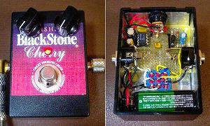
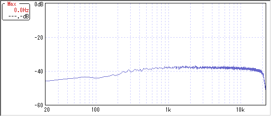
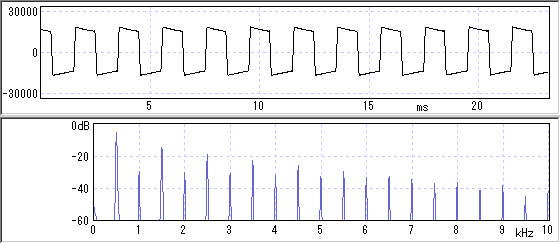

runoffgroove.com Big Daddy
2007年06月13日 カテゴリー：自作エフェクター（アナログ）

runoffgroove.comのBig Daddyというディストーションです。簡単すぎて中身はスカスカです。スモーキーアンプのIC（LM386）が使ってあります。
音はというと結構歪みます。意外と気に入りました。部品10個ぐらいでもこんなに良いものができるんですね。歪み調整ツマミほとんど意味ないですが…。歪みは常にMAXだという漢（おとこ）な人向きです。FETを2SK30A-GRに変えると歪みがかなり減ります（定数が合ってないのかな）。
デザイン（貼っただけ）はやっぱりタバコ。マンガ「NANA」で有名なBlackStoneです。ブラックストーンズのようにパンクをやるのにうってつけ…かもしれない。
追記：少し回路を変更し作り直しました→こちら
▽回路図
runoffgroove.com→Big Daddy
▽周波数特性

トーンコントロールがないので面白くもなんともないです。測定上はDeanMarkley K-15より低域が出てるようです。聴覚上は大して変わりません。
▽波形・倍音特性

ダイオードなしでもこんだけクリップしてます。DeanMarkley K-15と違い偶数次倍音が出ていて、音に厚みがあるような気がします（思い込みかも）。